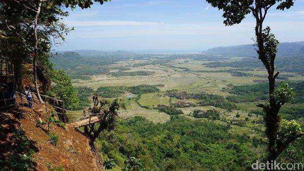
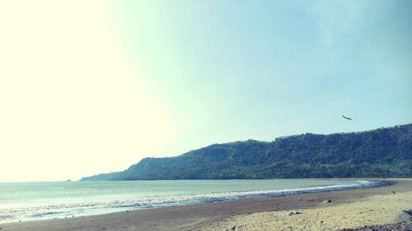
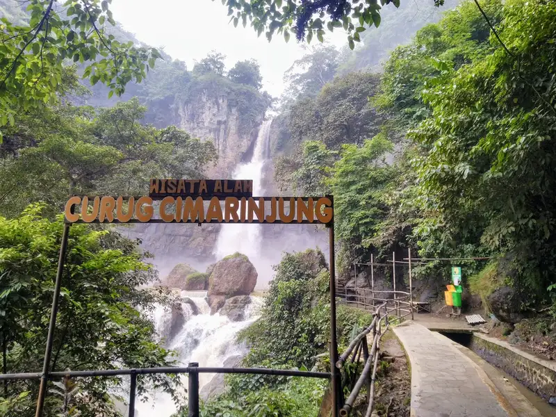
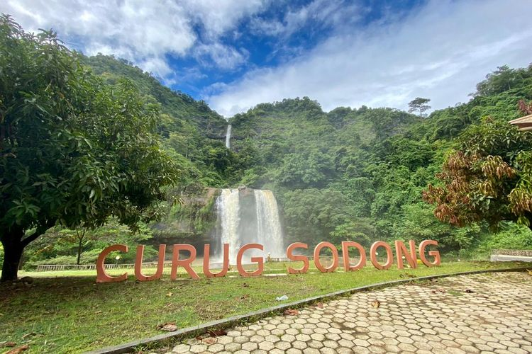
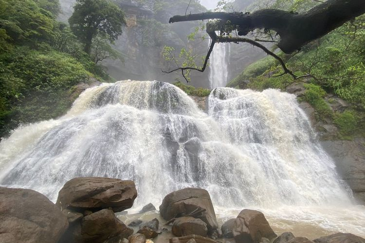
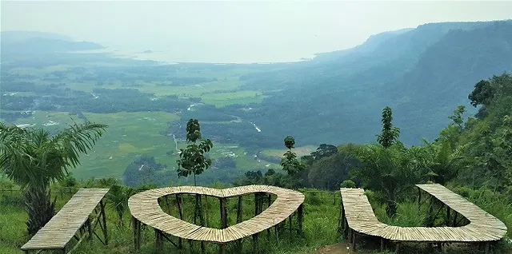
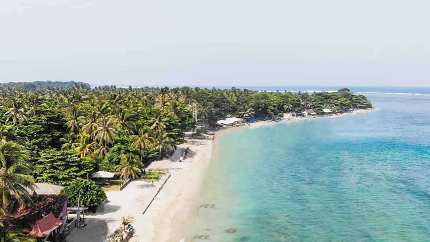
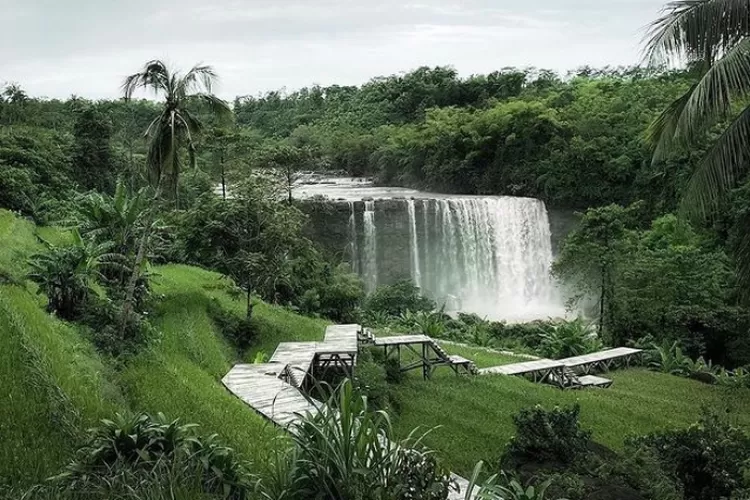
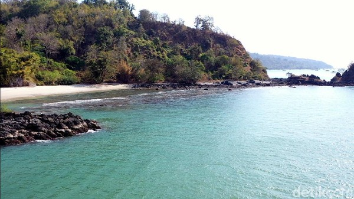

Geopark Ciletuh
1. Puncak Darma

Puncak Darma yang berada di ketinggian lebih dari 230 meter menawarkan pemandangan indahnya garis pantai di sana. Menjadi lokasi paling pas untuk bisa menyaksikan keindahan pantai, hutan, dan air terjun di Geopark Ciletuh. Kamu bisa menikmati sunrise dan juga sunset dari Puncak Darma. Perpaduan sawah dan hutan yang menghijau, aliran sungai, dan birunya laut, bakal membius kamu.
2. Bukit Panenjoan
Bukit Panenjoan merupakan spot untuk menikmati pemandangan alam di Geopark Ciletuh. Apalagi ada spot selfie yang cukup ngehits dengan background alam yang istimewa. Tak hanya sekadar menawarkan pemandangan indah, di Bukit Panenjoan juga terdapat banyak penginapan murah yang dapat kamu sewa untuk bermalam. Tiket masuk ke tempat wisata ini juga tidak terlalu mahal, karena hanya perlu membayar sekitar Rp 5 ribu per orang.
3. Pantai Palangpang
Pantai Palangpang mungkin bisa dibilang sebagai pintu masuk untuk menikmati indahnya laut yang ada di kawasan Geopark Ciletuh. Pasir pantai yang berwarna kecoklatan berpadu dengan laut yang indah. Tak hanya itu, garis pantainya yang luas sangat cocok untuk kamu yang ingin berjalan-jalan atau sekadar santai di sekitar bibir pantai. Jika kamu berniat mengunjungi Pantai Palangpang, kamu hanya perlu membawar sekitar Rp 5 ribu untuk biaya masuknya.
4. Curug Cimarinjung
Aliran air Curug Cimarinjung terlihat dari pantai Palangpang. Untuk sampai ke air terjun ini, kamu hanya perlu jalan kaki beberapa sekitar 1 km dari pantai. Dari dekat, aliran airnya cukup besar dan tampak megah karena tebingnya terdiri dari batuan besar yang di atasnya ditumbuhi tumbuhan hijau. Bebatuan di sini tampak tak biasa, melainkan terlihat klasik seperti bebatuan jaman purba.
5. Curug Sodong
Objek wisata di Geopark Ciletuh selanjutnya yang sayang untuk dilewatkan adalah Curug Sodong. Banyak pula yang menyebut air terjun ini sebagai Curug Kembar. Curug Sodong memang memiliki dua aliran air yang cukup besar yang mengalir berdampingan. Di balik air terjun ini terdapat cekungan yang bentuknya menyerupai gua. Oleh karenanya, objek wisata ini disematkan kata “sodong” yang diambil dari bahasa Sunda yang berarti gua.
6. Curug Cikanteh
Curug yang berada dalam kawasan Geopark Ciletuh ini memiliki ketinggian sekitar 60 meter dengan aliran air yang deras.Kesegaran dan keindahan alam yang akan didapatkan membuat Curug Cikanteh cukup populer di kalangan pengunjung.
7. Puncak Tugu
Puncak Tugu bisa dibilang sebagai salah satu spot paling pas untuk menikmati pemandangan alam Geopark Ciletuh bersama pasangan. Lokasinya yang mudah dijangkau dan panorama alamnya yang indah membuat destinasi wisata ini cukup populer di kawasan Geopark Ciletuh. Kamu juga bisa melihat sunrise, sunset, atau menyaksikan panorama malam hari yang indah dari tempat ini. Kamu juga bisa menginap dengan menyewa tenda yang disediakan di sana. Cukup siapkan uang sebesar Rp 5 ribu hingga 10 ribu untuk masuk ke Puncak Tugu.
8. Pantai Ujung Genteng
Mungkin kamu sudah cukup mengenal Pantai Ujung Genteng yang ada di Sukabumi. Ya, pantai yang masih termasuk kawasan Geopark Ciletuh itu sangat terkenal akan keindahan alamnya. Saat tiba di sana, kamu akan disambut pasir putih pantai yang indah dan bibir pantai yang bersentuhan langsung dengan Samudera Hindia. Jadi wajar saja, jika Pantai Ujung Genteng memiliki garis pantai yang cukup panjang, yaitu sekitar 16 km.
9. Pantai Cimaja

Pantai Cimaja merupakan tempat yang pas didatangi untuk belajar surfing. Ombak yang ideal untuk berselancar dan garis pantai yang panjang, membuat beraktivitas disini sangat menyenangkan.
10. Curug Awang
Bagi yang ingin mengunjungi curug ini, kamu harus bersiap melintasi jalanan yang terjal di tengah hutan dan perkebunan milik warga setempat. Kamu harus menempuh perjalanan beberapa ratus meter sebelum mencapai pintu masuk curug dan berhati-hati saat mengendarai kendaraanmu. Meskipun cukup sulit, semuanya akan terbayar dengan pemandangan indah dari Curug Awang. Sayangnya, karena debit airnya yang besar, kamu tidak disarankan untuk bermain air di sana.
11. Pulau kunti
Dari sekian banyak tempat menarik di kawasan Geopark Ciletuh, Kabupaten Sukabumi, Jawa Barat, ada sebuah pulau yang cukup indah, yaitu Pulau Kunti. Meski namanya menjadi perdebatan, apakah berasal dari nama Dewi Kunti dalam dunia pewayangan atau kisah kuntilanak sejenis hantu gentayangan khas Indonesia. Pulau Kunti bisa menjadi pilihan eksplorasi para wisatawan yang mendambakan suasana alami. Selain menikmati indahnya panorama pantai, para pengunjung juga bisa melakukan diving, snorkling, dan memancing.